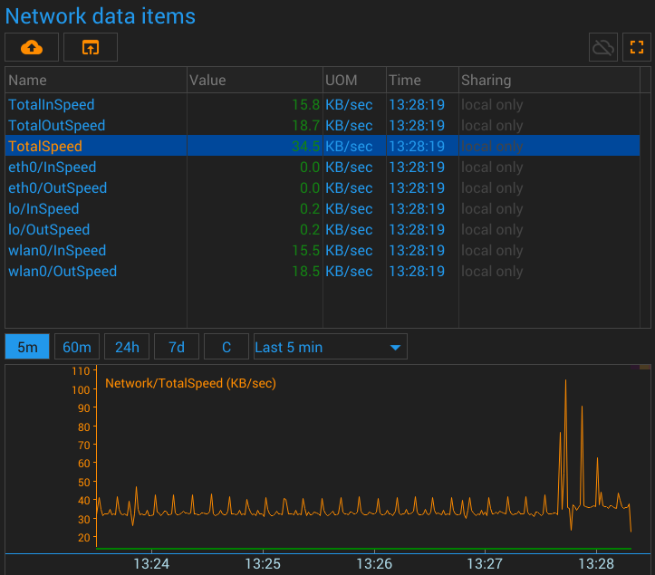
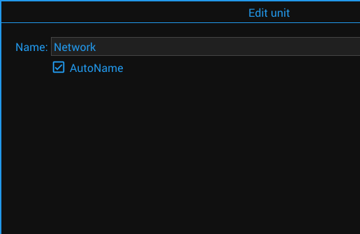

{#header.html#}
{%title=Gazer - Unit - Computer Network%}
Computer Network Unit
Description
The unit periodically gets metrics of the operating system's network interfaces
and places them in the appropriate data items.
Parameters
Data Items
The unit writes the measured parameters to the following data items:
%interface_name%/InSpeed
%interface_name%/OutSpeed
%interface_name%/TotalInSpeed
%interface_name%/TotalOutSpeed
%interface_name%/TotalSpeed
Pictures
Screenshot

Configuration

{#bottom.html#}